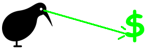

{kind=link}
mtcars[["cyl"]] [1] 6 6 4 6 8 6 8 4 4 6 6 8 8 8 8 8 8 4 4 4 4 8 8 8 8 4 4 4 8 6 8 4July 15, 2021

R’s $ data accessor symbol is part of an international ruse. I wrote a function so you can use your local currency symbol instead.
You’re an R user, so you’ll know how to access the contents of a quoted column name from a dataframe with square-bracket notation.
The dollar symbol ($) does the same thing, of course, in the form dataframe$column.
But, like basically everything in R, it’s just a function.
So you can also use it in the ‘traditional way’ by passing the dataframe and column name to it as arguments inside brackets. You’ll need to use backticks (```) though, because function names can’t start with symbols or numbers.
But why the dollar symbol? Something something ‘compatability with S’.
Or perhaps a more sinister ploy by R’s original developers, Ihaka and Gentleman?
Like a KIWI CONSPIRACY to raise awareness of the NEW ZEALAND DOLLAR (NZD) and INFLUENCE currency markets? I’m just asking the question.1
So, I’m giving you the FREEDOM to assign the functionality of the dollar symbol to another currency symbol, like, oh, I don’t know, the pound sterling symbol (£), as a completely random example.
You can’t use it in the dataframe$column form, however. That kind of behaviour is reserved for special symbols in R.2
Shame. R has a little quirk that will make this work though. Sort of.
You can make a function do this by putting it between percentage symbols (%). This is called an ‘infix operator’ and you may have seen the {magrittr} pipe (%>%) as one example.
As a complete coincidence, I live in Great Britain (GB) where we use pound sterling (£, or ‘GBP’).
R also knows where I live (another conspiracy?).
This string is R’s way of keeping track of the location-specific information that influences stuff like the language of error messages.
You can specify different locales for different things. Here’s my locale for ‘monetary’ parameters, for example.
That particular value impacts parameters like the punctuation mark used for decimals and, wouldn’t you know it, the symbol used for currency.
decimal_point thousands_sep grouping int_curr_symbol
"." "" "" "GBP "
currency_symbol mon_decimal_point mon_thousands_sep mon_grouping
"£" "." "," "\003\003"
positive_sign negative_sign int_frac_digits frac_digits
"" "-" "2" "2"
p_cs_precedes p_sep_by_space n_cs_precedes n_sep_by_space
"1" "0" "1" "0"
p_sign_posn n_sign_posn
"1" "1" So, that means I can write you a function that gets the currency symbol for your locale and assigns to it the functionality of the dollar symbol, naturally.
copy_dollar <- function() {
# Get currency symbol for locale
currency <- Sys.localeconv()[["currency_symbol"]]
# Report the locale
if (currency == "$") stop("KIWI CONSPIRATOR!")
locale <- Sys.getlocale(category = "LC_MONETARY")
cat(paste0("Your monetary locale is '", locale, "'\n"))
# Generate and evaluate strings
expr_fn <- paste0("`", currency, "` <<- `$`")
expr_in <- paste0("`%", currency, "%` <<- `$`")
eval(rlang::parse_expr(expr_fn)) # function form
eval(rlang::parse_expr(expr_in)) # infix form
# Report to user
cat(
paste0("Try `", currency, "`(df, col) and df%", currency, "%col\n")
)
}I used a bit of a trick3 there. You can’t use a string on the left-hand side of the assignment operator, but you can build an R expression as a string and eval()uate a parsed version of it (with some help from {rlang} in my example).
I also used a special double-headed assignment arrow, <<-, that makes the objects available in the global environment.4 That means we can use the new functions outside the scope of the copy_dollar() function.
And now: freeeedooooom.
We got a couple of messages5 to confirm our location and let us know how we can use the new currency-symbol functions.
And we can see these in the global environment.
And we can prove that GBP equals NZD, at least as a function for accessing columns of a dataframe.
Okay, works for my location. What about when I’m competing in Japan at the Olympics?6 Well, I can change the monetary locale.
[1] "ja_JP.UTF-8" decimal_point thousands_sep grouping int_curr_symbol
"." "" "" "JPY "
currency_symbol mon_decimal_point mon_thousands_sep mon_grouping
"¥" "." "," "\003\003"
positive_sign negative_sign int_frac_digits frac_digits
"" "-" "0" "0"
p_cs_precedes p_sep_by_space n_cs_precedes n_sep_by_space
"1" "0" "1" "0"
p_sign_posn n_sign_posn
"1" "4" So now you can see the yen symbol (¥) as the named currency value for this locale. And you can use the function to activate it for use as a data accessor.
Your monetary locale is 'ja_JP.UTF-8'
Try `¥`(df, col) and df%¥%col [1] 6 6 4 6 8 6 8 4 4 6 6 8 8 8 8 8 8 4 4 4 4 8 8 8 8 4 4 4 8 6 8 4Oh, and there’s no point trying to do this if your locale already uses the dollar for currency. I know you want as many dollars as possible, but don’t be greedy.
[1] "en_NZ.UTF-8"Error in copy_dollar(): KIWI CONSPIRATOR!I’ll reset my settings to the motherland to prevent any accidental borking.
[1] "en_GB.UTF-8/en_GB.UTF-8/en_GB.UTF-8/C/en_GB.UTF-8/en_US.UTF-8"Nothing ever goes wrong in Britain, after all.
While you go and adjust your locale in an act of defiance, be on the lookout for the next New Zealander conspiracy.
I heard that they want to replace the ampersand (&) symbol in R version 5 with NEWZEAL&, so stay on your toes.
Hang on…
I think I used sheep-related phrases in all the section titles of this post. And aren’t there like 10 sheep per person in New Zealand?
They’ve got to me already!
Last rendered: 2023-08-20 22:50:04 BSTR version 4.3.1 (2023-06-16)
Platform: aarch64-apple-darwin20 (64-bit)
Running under: macOS Ventura 13.2.1
Matrix products: default
BLAS: /Library/Frameworks/R.framework/Versions/4.3-arm64/Resources/lib/libRblas.0.dylib
LAPACK: /Library/Frameworks/R.framework/Versions/4.3-arm64/Resources/lib/libRlapack.dylib; LAPACK version 3.11.0
locale:
[1] en_GB.UTF-8/en_GB.UTF-8/en_GB.UTF-8/C/en_GB.UTF-8/en_US.UTF-8
time zone: Europe/London
tzcode source: internal
attached base packages:
[1] stats graphics grDevices utils datasets methods base
loaded via a namespace (and not attached):
[1] htmlwidgets_1.6.2 compiler_4.3.1 fastmap_1.1.1 cli_3.6.1
[5] tools_4.3.1 htmltools_0.5.5 rstudioapi_0.15.0 yaml_2.3.7
[9] rmarkdown_2.23 knitr_1.43.1 jsonlite_1.8.7 xfun_0.39
[13] digest_0.6.33 rlang_1.1.1 evaluate_0.21 With apologies to all the lovely people of New Zealand.↩︎
Yep, you could probably change this in the R source code and recompile it, but… effort.↩︎
‘Illusions, Michael.’↩︎
In other words, assign like the single-headed ‘gets’ operator, <-, but more so! You may know that I have strong feelings about assigment operators, lol.↩︎
Yes, I’m aware I’ve written the messages in English only. I can only break down one international barrier at once, pal.↩︎
I heard that code golf is one of the new sports on display this year?↩︎